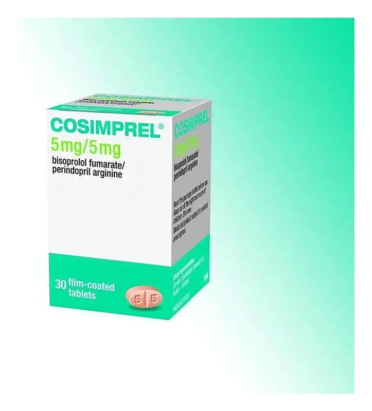

Cosimprel 5 mg/5 mg Film Kaplı Tablet, 30 Adet

Ne için kullanılır
KT · Bölüm 1COSIMPREL bir yüzüne diğer yüzünde '5/5' kazınmış, pembe bej, oblong, çift katmanlı çentikli film kaplı bir tablettir. Tabletler, desikant jel içeren opak kapaklı akış düzenleyicili beyaz kutuda 30 film kaplı tablet içeren ambalajlarda bulunmaktadır. Tablet, iki eşit doza bölünebilmektedir.
COSIMPREL bir tablette iki etkin madde, bisoprolol fumarat ve perindopril arjinin içermektedir: • Bisoprolol fumarat, beta blokörler denilen ilaç grubuna dahildir. Beta blokörler kalp atım hızını yavaşlatmakta ve vücut etrafına kan pompalamasında kalbi daha etkili hale getirmektedir. • Perindopril arjinin bir anjiyotensin dönüştürücü enzim (ADE) inhibitörüdür. Kan damarlarını genişleterek ve bu sayede kalbinizin kan pompalamasını kolaylaştırarak iş görmektedir.
COSIMPREL yüksek kan basıncını (hipertansiyon) ve/veya stabil koroner arter hastalığını (kalbe kan temininin azaldığı veya engellendiği durumdur) ve/veya kronik kalp yetmezliğini (nefes darlığı ve şişkinlik ile sonuçlanan kalbin vücudun ihtiyaçlarını karşılamaya yetecek kadar kan pompalayamadığı bir durumdur) tedavi etmek için kullanılmaktadır.
Bisoprolol fumarat ve perindopril arjinini ayrı tabletler olarak almak yerine, her iki etkin maddeyi aynı güçte içeren sadece bir tablet COSIMPREL alacaksınız.